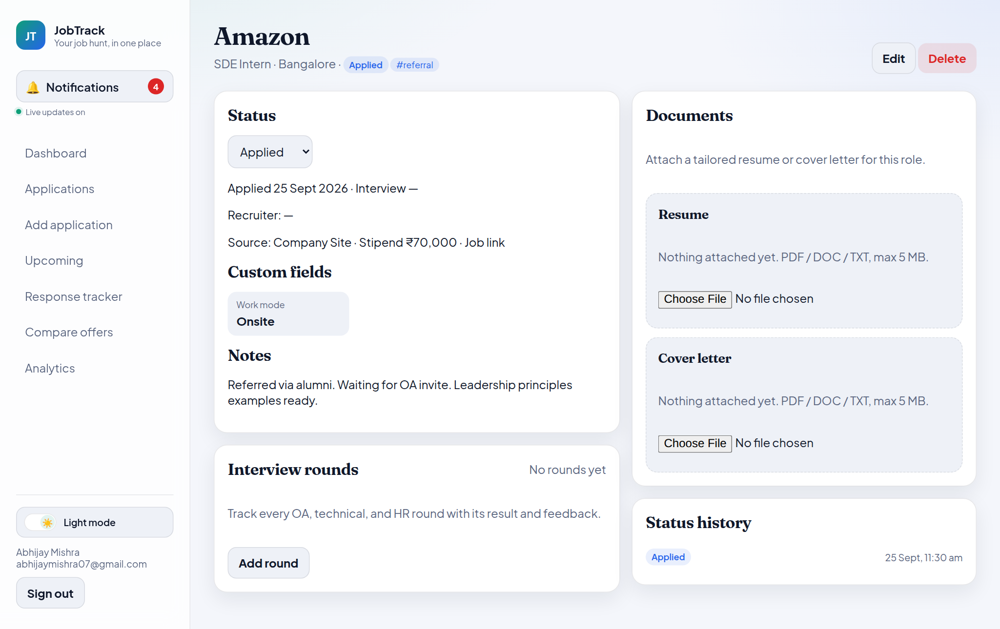

New features added in Review 3 — React flows backed by new API endpoints
1.1. Interview Rounds Timeline
React: client/src/pages/ApplicationDetail.jsx · Backend: POST / PATCH / DELETE /api/applications/:id/rounds[/:roundId]
Description
Every application now has its own timeline of interview rounds — online assessment, technical, managerial, HR, or group discussion — each with a date, a result (Pending, Passed, Failed) and free-text feedback. The student adds a round from the detail page, marks it Passed or Failed with one click, and sees how many rounds have been cleared. A status history card records every stage change with its timestamp, so the full journey of an application is visible in one place.
Code Snippet
async function addRound(e) {
e.preventDefault();
const ok = await run(
api.post(`/applications/${app._id}/rounds`, { ...draft, scheduledAt: draft.scheduledAt || null })
);
if (ok) { setDraft(emptyRound); setAdding(false); }
}
function setResult(round, result) {
run(api.patch(`/applications/${app._id}/rounds/${round._id}`, { result }));
}
function removeRound(round) {
if (!window.confirm(`Remove "${round.name}"?`)) return;
run(api.delete(`/applications/${app._id}/rounds/${round._id}`));
}Screenshots
1. Initial State — No Rounds Yet

Figure 1.1 – Amazon application before any interview round is recorded.